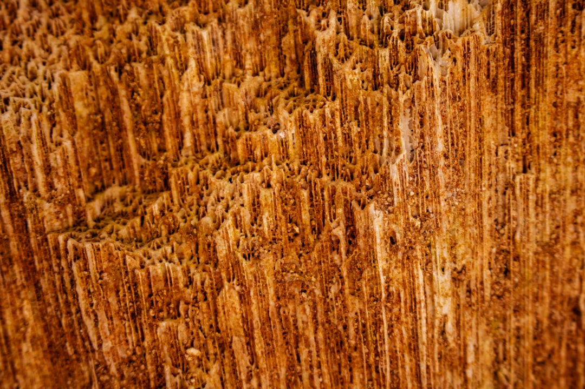

03 / Acoustic
Guitar

손에 감기는 균형, 흔들리지 않는 톤.
좋은 기타는 소리보다 먼저 손에 안깁니다. 넥의 두께, 현의 장력, 바디의 균형 — 몸이 먼저 알아채는 편안함에서 명료한 톤이 시작됩니다.
1966년 첫 어쿠스틱 이래, 야마하 기타는 초심자의 첫 코드부터 무대 위 솔로까지 폭넓게 함께해 왔습니다. 스프루스 상판과 로즈우드·마호가니 측후판의 조합이 풍부한 공명을 만들고, 정교한 브레이싱이 저역의 두께와 고역의 선명함을 동시에 잡습니다. 무대의 강한 스트로크에도, 거실의 여린 핑거스타일에도 균형을 잃지 않는 톤 — 그것이 오래 곁에 둘 수 있는 기타의 조건입니다.
Specification
- 타입
- 어쿠스틱 · 클래식 · 일렉트릭 어쿠스틱
- 상판
- 솔리드 스프루스 — 정교한 브레이싱
- 측·후판
- 로즈우드 · 마호가니 — 풍부한 공명
- 넥
- 손에 감기는 슬림 프로파일 · 안정된 장력
- 계보
- 1966 첫 어쿠스틱 → 오늘의 FG/L 시리즈

Make Waves